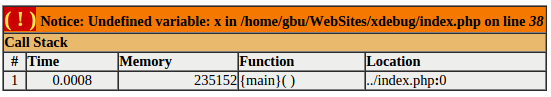
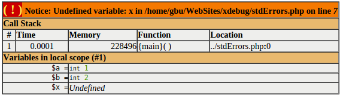
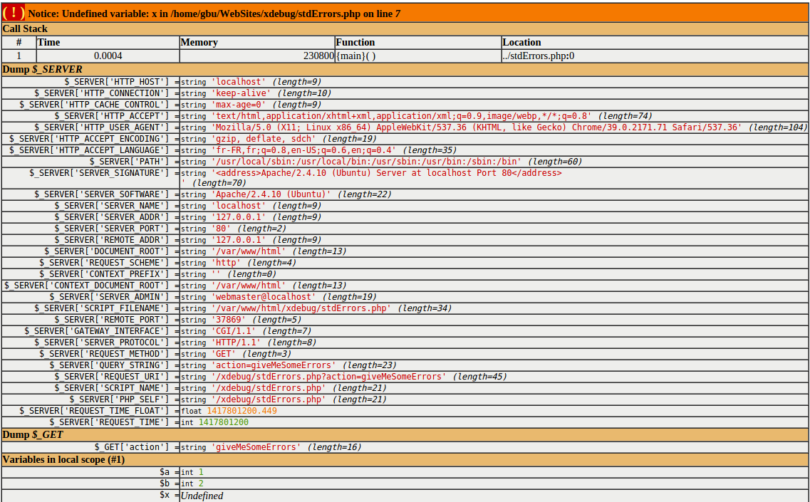
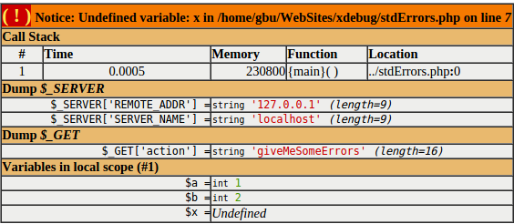
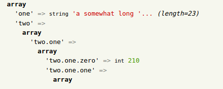
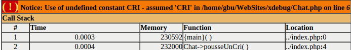
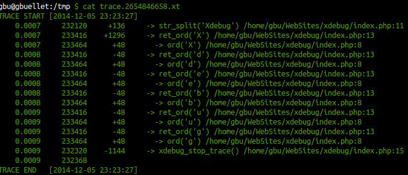

Debug like a Boss
avec
XDEBUG
XDebug ? De quoi c'est
 Une extention PHP
Une extention PHP
Et ça m'apporte quoi ?
- Affichage des erreurs (Mais en plus joli)
- var_dump amélioré
- Stack trace
- Code coverage
- Profiling
- Remote Debugging
Installation
- Linux : apt-get install php5-debug (ou par pecl)
- MAC : Activer l'extention dans MAMP
- Windows : OSEF
Et bien sure, on modifie le php.ini
[Xdebug]
zend_extension=/path/to/xdebug.so
(find . -name xdebug.so -print)
Affichage des erreurs
$a = 1;
$b = 2;
echo $x;
Configuration standard
Configuration affichage des variables
[Xdebug]
xdebug.show_local_vars=1

Configuration affichage des variables superglobales
[Xdebug]
xdebug.dump.GET=*
xdebug.dump.SERVER=*

Configuration affichage des variables superglobales
[Xdebug]
xdebug.dump.GET=*
xdebug.dump.SERVER=REMOTE_ADDR, SERVER_NAME

var_dump
class test {
public $pub = false;
private $priv = true;
protected $prot = 42;
}
$t = new test;
$t->pub = $t;
$data = array(
'one' => 'a somewhat long string!',
'two' => array(
'two.one' => array(
'two.one.zero' => 210,
'two.one.one' => array(
'two.one.one.zero' => 3.141592564,
'two.one.one.one' => 2.7,
),
),
),
'three' => $t,
'four' => range(0, 5),
);
var_dump( $data );
Paramétrage du var_dump() à la volée avec ini_set()
- xdebug.var_display_max_children
- xdebug.var_display_max_data
- xdebug.var_display_max_depth

Stack trace
class Chat {
public function pousseUnCri() {
echo CRI;
}
}
require_once('Chat.php');
$garfield = new Chat('Garfield');
$garfield->pousseUnCri();

ini_set('xdebug.collect_params', 3);
ini_set('xdebug.show_mem_delta', 1);
ini_set('xdebug.trace_format', 2); // export au format html
xdebug_start_trace();
$str = "Xdebug";
function ret_ord( $c ) {
return ord( $c );
}
foreach ( str_split( $str ) as $char ) {
echo $char, ": ", ret_ord( $char ), "\n";
}
xdebug_stop_trace();

Profiler
[Xdebug]
xdebug.profiler_enable = 1
xdebug.profiler_append = 1
xdebug.profiler_output_dir = /tmp
xdebug.profiler_output_name = cachegrind.out.%p
Remote debug

Configuration
[Xdebug]
xdebug.remote_enable = 1 (default 0)
xdebug.remote_host = localhost
xdebug.remote_port = 9000
xdebug.remote_cookie_expire_time = 3600
xdebug.remote_mode = req ou jit (default req)
Ligne de commande
export XDEBUG_CONFIG="idekey=session_name"
php myscript.php
export XDEBUG_CONFIG="idekey=session_name remote_host=localhost profiler_enable=1